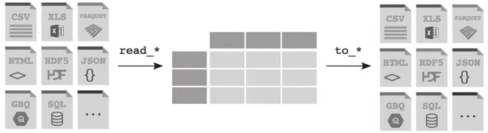

1. Pandas 基础
1.1 Python数据结构
在标准的Python数据类型中，有些是可变的，有些是不可变的。不可变就意味着你不能对它进行操作，只能读取。
- 不可变数据：Number（数字）、String（字符串）、Tuple（元组）。
- 可变数据：List（列表）、Dictionary（字典）、Set（集合）。
# isinstance函数用来判断数据是不是指定类型
isinstance(123, int)
# True
常用的字符操作：
len('good') # 4 （字符的长度）
'good'.replace('g', 'G') # 'Good' （替换字符）
'山-水-风-雨'.split('-') # ['山', '水', '风', '雨'] （用指定字符分隔，默认空格）
'好山好水好风光'.split('好') # ['', '山', '水', '风光']
'-'.join(['山','水','风','雨']) # '山-水-风-雨'
'和'.join(['诗', '远方']) # '诗和远方'
'good'.upper() # 'GOOD' （全转大写）
'GOOD'.lower() # 'good' （全转小写）
'Good Bye'.swapcase() # 'gOOD bYE' （大小写互换）
'good'.capitalize() # 'Good' （首字母转大写）
'good'.islower() # True （是否全是小写）
'good'.isupper() # False （是否全是大写）
'3月'.zfill(3) # '03月' （指定长度，如长度不够，前面补0）
列表常用操作：
sorted(a) # 返回一个排序的列表，但不改变原列表
any(a) # True（是否至少有一个元素为真）
all(a) # True（是否所有元素为真）
a.append(4) # a: [1, 2, 3, 4]（增加一个元素）
a.pop() # 每执行一次，删除最后一个元素
a.extend([9,8]) # a: [1, 2, 3, 9, 8]（与其他列表合并）
a.insert(1, 'a') # a: [1, 'a', 2, 3]（在指定索引位插入元素，索引从0开始）
a.remove('a') # 删除第一个指定元素
常用的字典操作方法：
d.pop('name') # 'Tom'（删除指定key）
d.popitem() # 随机删除某一项
del d['name'] # 删除键值对
d.clear() # 清空字典
# 按类型访问，可迭代
d.keys() # 列出所有键
d.values() # 列出所有值
d.items() # 列出所有键值对元组（k, v）
# 操作
d.setdefault('a', 3) # 插入一个键并给定默认值3，如不指定，则为None
d1.update(dict2) # 将字典dict2的键值对添加到字典dict
# 如果键存在，则返回其对应值；如果键不在字典中，则返回默认值
d.get('math', 100) # 100
d2 = d.copy() # 深拷贝，d变化不影响d2
1.2 Pandas 数据读取与输出

常见的数据格式读取和输出方法：
| 格式 | 文件格式 | 读取函数 | 写入函数 |
|---|---|---|---|
| binary | Excel | read_excel | to_excel |
| text | CSV | read_csv, read_table | to_csv |
| text | JSON | read_json | to_json |
| text | 网页HTML表格 | read_html | to_html |
| text | 本地剪切板 | read_clipboard | to_clipboard |
| SQL | SQL查询数据库 | read_sql | to_sql |
| text | Markdown | to_markdonw |
pd.read_csv()基本语法：
pd.read_csv(filepath_or_buffer, sep=',', delimiter=None,
header='infer', skip_blank_lines=True, name=None,
nrows=None, index_col=False, usecols=False, squeeze=False,
prefix=False, mangle_dupe_cols=True, skiprows=None,
skipfooter=None, na_values=None, date_parser=None)
- filepath_or_buffer：文件路径
- sep：代表每行数据内容的分割符合，默认为逗号
- delimiter：备选分隔符，效果与sep一样，如果指定该参数，则sep参数失效
- header：指定第几行是表头，默认会自动把第一行作为表头（注：skip_blank_lines=True，header参数将忽略空行和注释行，因此header=0表示数据第一行而非文件的第一行）
- name：用来指定列的名称，它是一个类似列表的序列，与数据一一对应
- nrows：指定需要读取的行数
- index_col：用来指定索引列，可以是列索引的列编号或者列名，如果给定一个序列，则有多个行索引
- usecols：如果只使用数据部分列，可以使用usecols指定
- squeeze：设置为True，如果文件只包含一列，则返回一个Series，如果多列，则返回DataFrame
- prefix：如果原始数据没有列名，可以指定一个前缀加序数名称，如c_1, c_2
- mangle_dupe_cols：如果该参数为True，当列名有重复时，列名将变成X，X.1，...，X.N
- skiprows：跳过需要忽略的行数（从文件开始处算起）或需要忽略的行号列表
- skipfooter：尾部跳过，从文件尾部开始忽略
- na_values：空值替换NA/NaN
- date_parser：用于解析日期的函数，默认使用dateutil.parser.parser来做转换
from io import StringIO
data = ('a,b,c\n1,Yes,2\n3,No,4')
pd.read_csv(StringIO(data),true_values=['Yes'],false_values=["No"])
# a b c
# 0 1 True 2
# 1 3 False 4
date_parser = pd.io.date_converters.parse_date_time
date_parser = lambda x: pd.to_datetime(x, utc=True, format='%d%b%Y')
date_parser = lambda d: pd.datetime.strptime(d, '%d%b%Y')
# 使用
pd.read_csv(data, parse_dates=['年份'], date_parser=date_parser)
parse_dates参数用于对时间日期进行解析
pd.read_csv(data, parse_dates=True) # 自动解析日期时间格式
pd.read_csv(data, parse_dates=['年份']) # 指定日期时间字段进行解析
pd.read_excel函数基本语法：
pd.read_excel(io, sheet_name=0, header=0,
names=None, index_col=None,
usecols=None, squeeze=False,
dtype=None, engine=None,
converters=None, true_values=None,
false_values=None, skiprows=None,
nrows=None, na_values=None,
keep_default_na=True, verbose=False,
parse_dates=False, date_parser=None,
thousands=None, comment=None, skipfooter=0,
convert_float=True, mangle_dupe_cols=True, **kwds)
1.3 Pandas基本操作
（1）建立索引
data = 'https://www.gairuo.com/file/data/dataset/team.xlsx'
df = pd.read_excel(data)
df.set_index('name') # 设置索引
df.set_index(['name', 'team']) # 设置两层索引
df.set_index('name', inplace=True) # 设置索引并修改原df变量数据
注意： 在以上操作中，我们并没有修改原来的df变量中的内容，如果希望用设置索引后的数据替换原来df变量中的数据，可以直接进行赋值操作或者传入inplace参数。
有时我们想取消已有的索引，可以使用df.reset_index()，重置索引
df.reset_index() # 清除索引
df.reset_index(drop=False,inplace=False)
时间索引：时序数据，date_range()，period_range()
# 从一个日期连续到另一个日期
pd.date_range(start='1/1/2018', end='1/08/2018')
# 指定开始时间和周期
pd.date_range(start='1/1/2018', periods=8)
# 以月为周期
pd.period_range(start='2017-01-01', end='2018-01-01', freq='M')
# 周期嵌套
pd.period_range(start=pd.Period('2017Q1', freq='Q'),
end=pd.Period('2017Q2', freq='Q'), freq='M')
（2）数据信息
Pandas提供了三个常用的样式查看方法。
df.head() # 前部数据，默认5条，可指定条数。
df.tail() # 尾部数据，默认5条，可指定条数。
df.sample() # 一条随机数据，可指定条数。
（3）统计计算
df.describe() 描述性统计，会返回一个有多行的所有数字列的统计表，每一行对应一个统计指标，有总数、平均数、标准差、最小值、四分位数、最大值等，这个表对我们初步了解数据很有帮助。
df.round() 四舍五入，df.value_counts(normalize=True) 重复值频率，df.unique() 去重值array，df.is_unique() 是否有重复
df.round(2) # 指定字段保留2位小数
df.round({'Q1':2, 'Q2':0})
s.nlargest() # 最大的前5个
s.nlargest(15) # 最大的前15个
s.nsmallest() # 最小的前5个
s.nsmallest(15) # 最小的前15个
（4）位置计算
diff()和shift()经常用来计算数据的增量变化，rank()用来生成数据的整体排名。df.diff()可以做位移差操作，经常用来计算一个序列数据中上一个数据和下一个数据之间的差值，如增量研究。shift()可以对数据进行移位，不做任何计算，也支持上下左右移动，移动后目标位置的类型无法接收的为NaN。rank()可以生成数据的排序值替换掉原来的数据值，它支持对所有类型数据进行排序。
1.4 数据选择
| 操 作 | 语 法 |
|---|---|
| 选择列 | df[col] |
| 按索引选择行 | df.loc[label] |
| 按照数字索引选择行 | df.iloc[loc] |
| 使用切片选择行 | df[5:10] |
| 使用表达式筛选行 | df[bool_vec] |
（1）切片
df.loc、df.iloc [<行表达式>,<列表达式>]
取具体值df.at[], df.iat[]
（2）获得数据df.git ，可以做类似字典的操作，如果无值，则返回默认值（下例中是0）。格式为df.get(key, default=None)，如果是DataFrame，key需要传入列名，返回的是此列的Series；如果是Series，需要传入索引，返回的是一个定值。
（3）数据截取df.truncate ，可以对DataFrame和Series进行截取，可以将索引传入before和after参数，将这个区间以外的数据剔除
df.truncate(before=2,after=5)
# name team Q1 Q2 Q3 Q4
# 2 Ack A 57 60 18 84
# 3 Eorge C 93 96 71 78
# 4 Oah D 65 49 61 86
# 5 Harlie C 24 13 87 43
df.ne() # 不等于 !=
df.le() # 小于等于 <=
df.lt() # 小于 <
df.ge() # 大于等于 >=
df.gt() # 大于 >
另外还有一个df.isin()函数，用于判断数据是否包含指定内容。可以传入一个列表，原数据只需要满足其中一个存在即可；也可以传入一个字典，键为列名，值为需要匹配的值，以实现按列个性化匹配存在值。
df[df.team.isin(['A','B'])] # 包含A、B两组的
df[df.isin({'team': ['C', 'D'], 'Q1':[36,93]})] # 复杂查询，其他值为NaN
（4）查询df.query(expr)使用布尔表达式查询DataFrame的列，表达式是一个字符串，类似于SQL中的where从句，不过它相当灵活。还支持使用@符引入变量。
df.query("Q1>Q2>80") # 直接写类型SQL where语句
df.query('(Q1<50) & (Q2>40) and (Q3>90)')
# 支持传入变量，如大于平均分40分
a = df.Q1.mean()
df.query('Q1 > @a + 40')
df.eval()与df.query()类似，也可以用于表达式筛选：
df[df.eval("Q1 > 90 > Q3 > 10 ")]
df[df.eval("Q1 > Q2 + @a")]
（5）筛选df.filter() 可以对行名和列名进行筛选，支持模糊匹配、正则表达式。
df.filter(items=['Q1', 'Q2']) # 选择两列
df.filter(regex='Q', axis=1) # 列名包含Q的列
df.filter(regex='e$', axis=1) # 以e结尾的列
df.filter(regex='1$', axis=0) # 正则，索引名以1结尾
df.filter(like='2', axis=0) # 索引中有2的
# 索引中以2开头、列名有Q的
df.filter(regex='^2', axis=0).filter(like='Q', axis=1)
Pandas提供了一个按列数据类型筛选的功能df.select_dtypes(include=None, exclude=None)，它可以指定包含和不包含的数据类型，如果只有一个类型，传入字符；如果有多个类型，传入列表。
（6）指定类型pd.to_XXX，系统方法可以将数据安全转换，errors参数可以实现无法转换则转换为兜底类型：
# 按大体类型推定
m = ['1', 2, 3]
s = pd.to_numeric(s) # 转成数字
pd.to_datetime(m) # 转成时间
pd.to_timedelta(m) # 转成时间差
pd.to_datetime(m, errors='coerce') # 错误处理
pd.to_numeric(m, errors='ignore')
pd.to_numeric(m errors='coerce').fillna(0) # 兜底填充
pd.to_datetime(df[['year', 'month', 'day']]) # 组合成日期
（7）索引排序df.sort_index()，实现按索引排序，默认以从小到大的升序方式排列。如希望按降序排序，传入ascending=False；数据值的排序主要使用sort_values()，数字按大小顺序，字符按字母顺序。Series和DataFrame都支持此方法。
（8）混合排序，有时候需要用索引和数据值混合排序。下例中假如name是索引，我们需要先按team排名，再按索引排名
df.set_index('name', inplace=True) # 设置name为索引
df.index.names = ['s_name'] # 给索引起名
df.sort_values(by=['s_name', 'team']) # 排序
（9）按值大小排序，nsmallest()和nlargest()用来实现数字列的排序，并可指定返回的个数：
# 先按Q1最小在前，如果相同，Q2小的在前
df.nsmallest(5, ['Q1', 'Q2'])
'''
name team Q1 Q2 Q3 Q4
37 Sebastian C 1 14 68 48
85 Liam B 2 80 24 25
39 Harley B 2 99 12 13
82 Finn E 4 1 55 32
58 Lewis B 4 34 77 28
'''
# 以上显示了前5个最小的值，仅支持数字类型的排序。